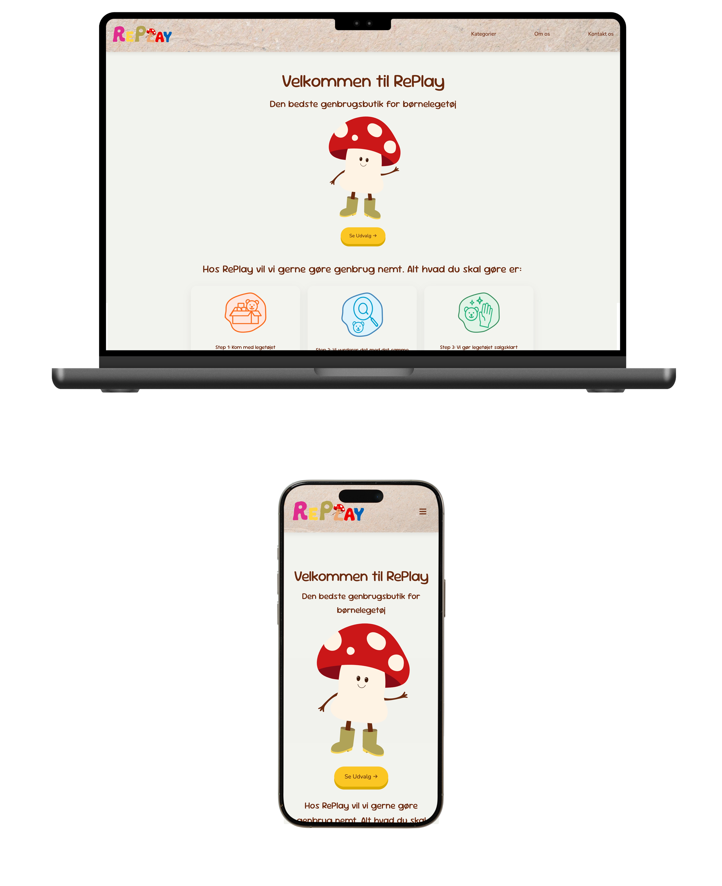
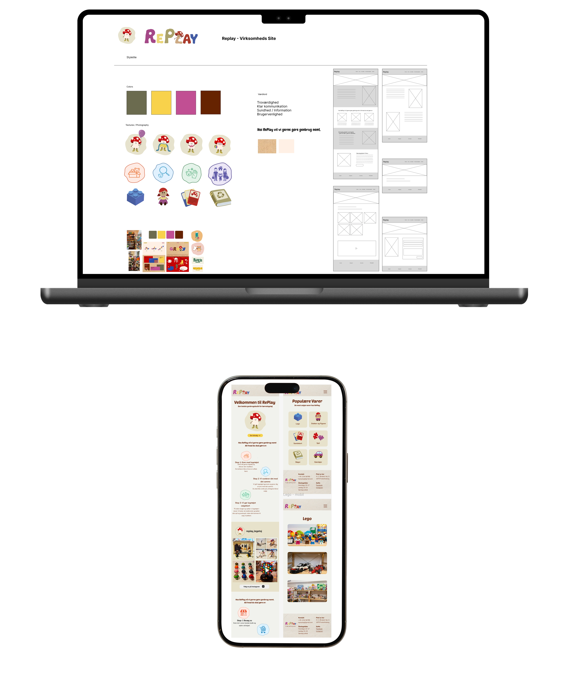
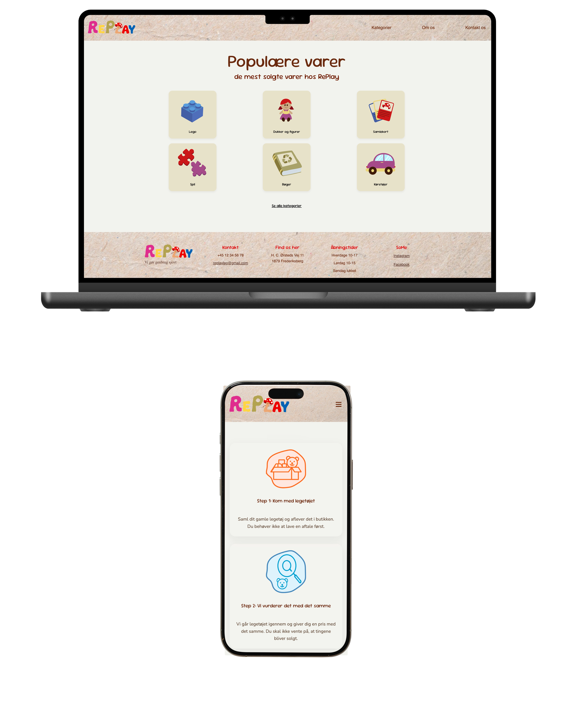
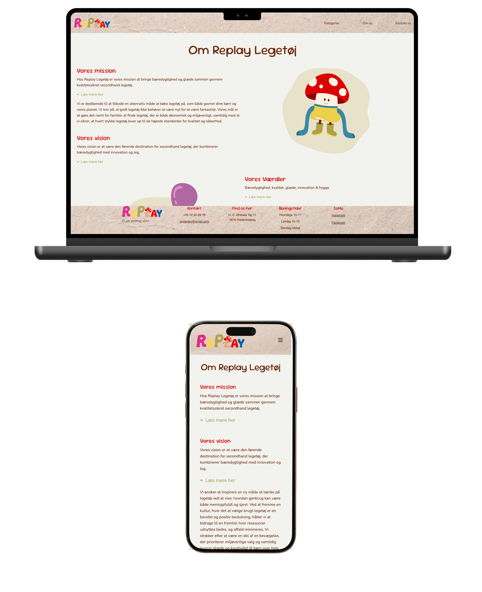

Virksomhedssite
Tema 5 - Grundlæggende Indhold
Introduktion
I Tema 5 arbejdede jeg med grundlæggende indholdsproduktion og
redesign af et virksomhedssite. Fokus var på planlægning, produktion
og formidling af digitalt indhold samt samspillet mellem indhold,
visuel identitet og brugeroplevelse.
Temaet samlede kompetencer fra tidligere temaer og satte dem i spil
i et større, mere helhedsorienteret projekt.
Projektet hed Virksomhedssite - RePlay og bestod i at udvikle et
redesign for en virksomhed med fokus på indhold, visuel identitet og
en sammenhængende digital løsning.
Løsning
Opgaven bestod i at redesigne et eksisterende virksomhedssite med
fokus på at forbedre både indhold, struktur og visuelt udtryk. Den
færdige løsning præsenterer virksomheden gennem en klar forside,
kategorisider og en “om os”-side, hvor både tekst og billeder
bidrager til en samlet og professionel formidling.
Websitet er responsivt og designet med fokus på overskuelig
navigation, tydelige sektioner og et visuelt udtryk, der
understøtter virksomhedens identitet.

Proces
Arbejdet startede med research og analyse af den medvirkende
virksomhed, herunder målgruppe, behov og eksisterende kommunikation.
På baggrund af dette udarbejdede jeg et koncept og en
kravsspecifikation, som dannede rammen for projektet.
Planlægning og projektstyring blev dokumenteret i Figma, hvor vi
arbejdede videre med moodboard, style tile og designeksempler for at
fastlægge det visuelle udtryk. Jeg producerede selv billede og
SVG-materiale, som blev brugt aktivt i designet for at skabe
autenticitet og sammenhæng mellem indhold og visuel stil.
Herefter udviklede jeg en prototype i Figma, som blev brugt til test
og evaluering. Testresultaterne gav indsigt i brugerens forståelse
af indhold og navigation og blev anvendt til justeringer, før det
endelige website blev færdiggjort.

Læring
- Jeg lærte at planlægge og producere indhold med udgangspunkt i en konkret virksomhed og målgruppe.
- Jeg fik erfaring med at bruge foto som en integreret del af webdesign.
- Jeg lærte at arbejde struktureret med større projekter og dokumentere hele processen.
- Jeg blev mere bevidst om sammenhængen mellem indhold, design og brugeroplevelse.
- I dag ville jeg arbejde endnu mere systematisk med indholdsstrategi tidligt i processen.

Reflektion
Tema 5 samlede mange af de kompetencer, jeg har opbygget gennem 1.
semester.
Projektet krævede, at jeg arbejdede med både indhold, design, proces
og teknisk implementering på samme tid.
Erfaringerne fra temaet har været særligt relevante i udviklingen af
mit portfolio-website, hvor jeg selv er ansvarlig for både
formidling og struktur.
